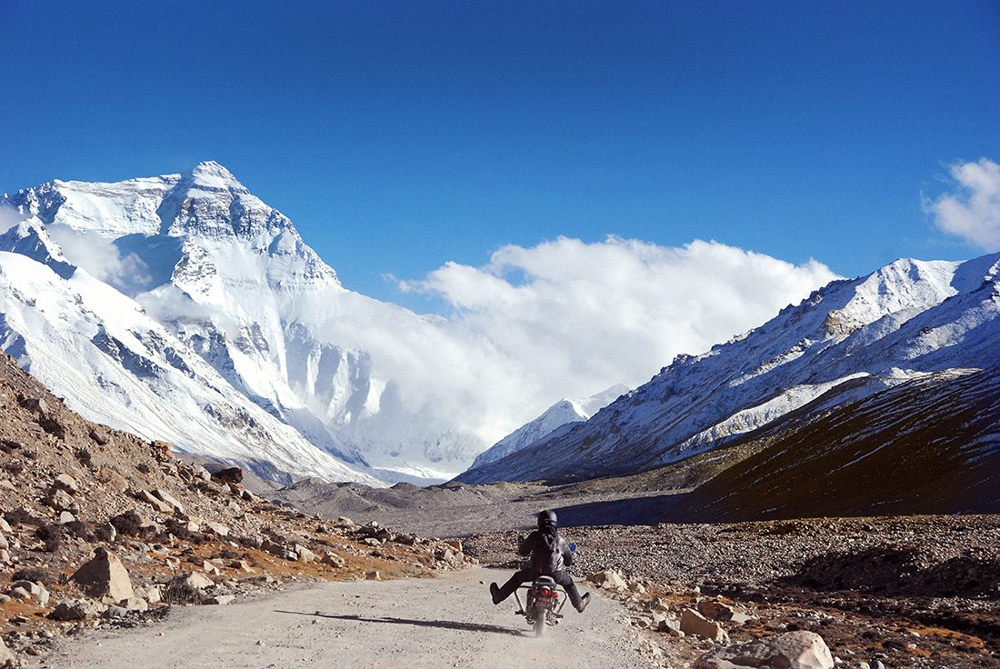
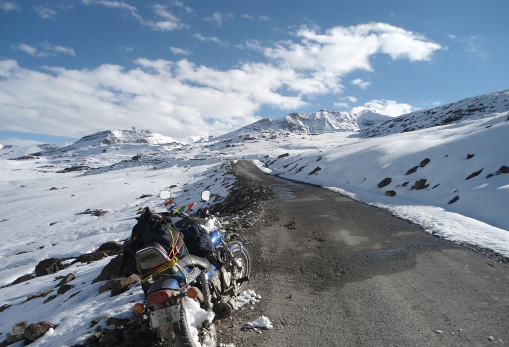
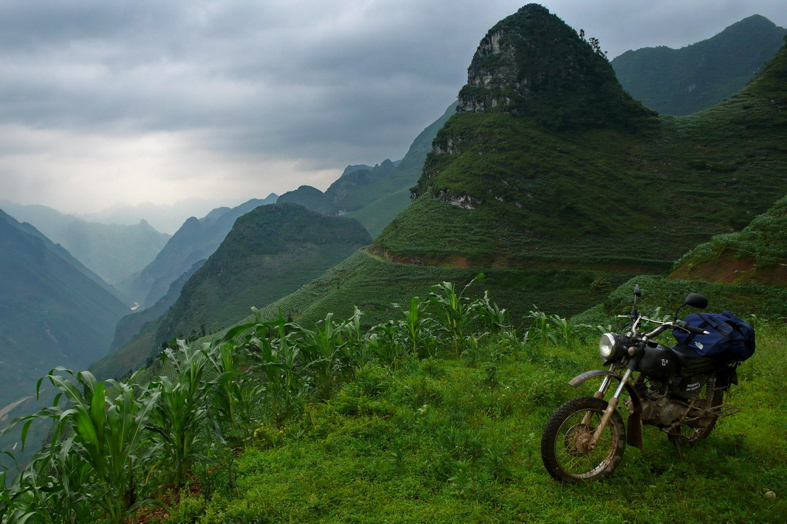
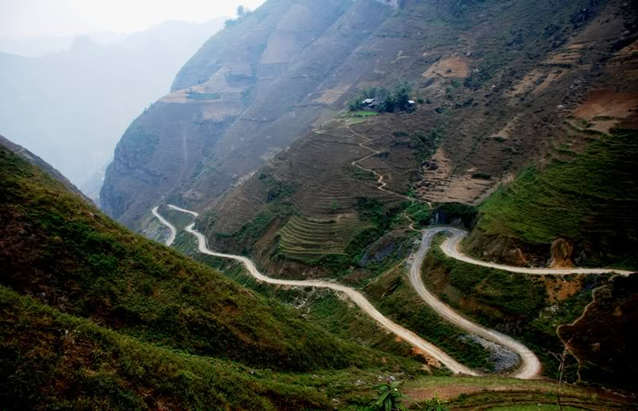
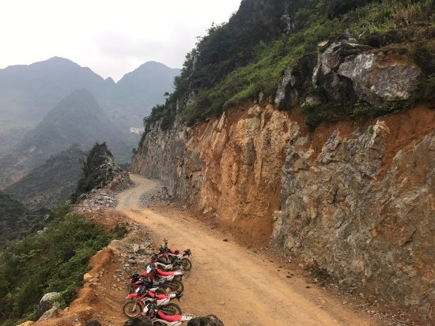

Trasy motocyklowe w Azji
Trasy w Azji są nie mniej zróżnicowane i ciekawe jak te na innych kontynentach a wspaniała przyroda oraz widoki w całości zrekompensują nam trudy i znoje.
U szczytu najwyższego wzniesienia Ziemi
Nepal to wyjątkowe miejsce samo w sobie – jego drogi i bezdroża mają w sobie coś mistycznego. Masywy górskie i ich ośnieżone szczyty, wzgórza o nagich, kamienistych zboczach, bujne dżungle pełne wrzaskliwych mieszkańców i głębokie jeziora – wszystko to sprawia, że dzikość i spokój tej krainy na zawsze zapisze się w waszych wspomnieniach. Najciekawsze trasy łączą miasta: Katmandu, Chitwan, Pakhorę i Tansen, ale wszystko zależy od czasu – jeśli uda wam się zaliczyć je wszystkie, możecie być z siebie dumni! Wskazówki – wybierajcie dobre wypożyczalnie i nie oszczędzajcie na maszynach, bo poza miastami asfalt trudno znaleźć. Pamiętajcie też, że miasta Azji są niezwykle zatłoczone i jazda motorem do najłatwiejszych nie należy. Z drugiej jednak strony w Nepalu, jeżeli motocykl jest najlepszym środkiem komunikacji. Z resztą przekonacie się sami.
 Wielka wietnamska wyprawa
Prawie 2 tys. km – tyle dzieli miasta Ho Chi Minh i Hanoi. Łączy je natomiast Ho Chi Minh Highway, czyli droga, której przejechanie w całości było dla wielu motocyklistów przygodą życia. Nic dziwnego, wiedzie ona bowiem przez bardzo zróżnicowany i często zapierający dech w piersiach kraj, jego rzeki, żyzne pola uprawne, góry i bujne lasy. Wyprawa tam zdecydowanie nie należy do łatwych i wymaga solidnego przygotowania, ale jedno jest pewne – w ten czy inny sposób Wietnam z pewnością warto zwiedzić. Jeśli zdecydujecie się tam wybrać, nie żałujcie czasu i pozwólcie sobie na zobaczenie parku narodowego Phong Nha oraz „rajskiej” jaskini Thien Duong.
 Wielka pętla XXX
LAos Laos Laos
 Wróc